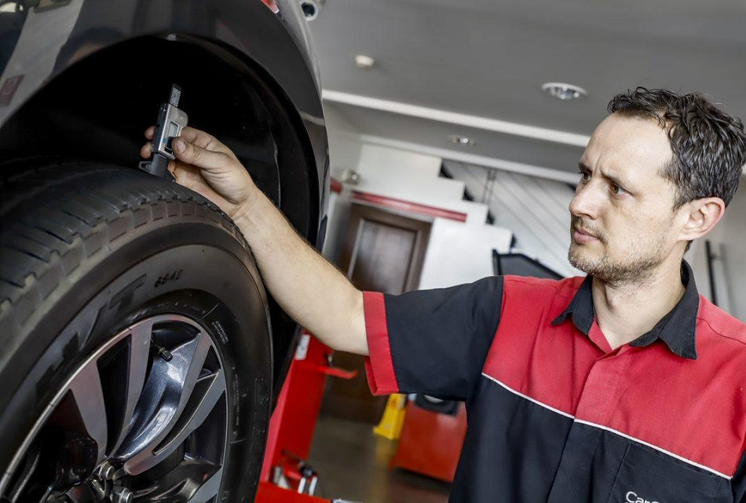

Mantenimiento preventivo para tus llantas , evita accidentes y ahorra dinero
El mantenimiento preventivo de las llantas es crucial para garantizar la seguridad en la carretera y extender su vida útil. En este artículo, te compartimos consejos clave para cuidar adecuadamente tus llantas y evitar gastos imprevistos.
